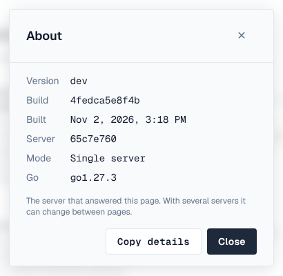

Vectored supports Depotex. Write to support@vectored.dev, or use the form at vectored.dev/#contact. Licenses, renewals and changes of tier go the same way.
1. Before you write
- Check the system check — Settings → Advanced → System check often names the problem and links to the page that fixes it (Pro).
- Check known issues — Known issues and the FAQ may already have the answer.
- Check the server log — Errors carry a request ID; the log line with it says what went wrong.
- If the server can't start — It runs in recovery mode, which lists what's wrong and how to fix it.
2. What to send
A request with these can usually be answered the first time:
| What | Where to find it |
|---|---|
| Version, build and the server that answered | ? menu → About → Copy details (it also copies the page and browser), or the footer's copy button |
| Your installation ID and license ID | Settings → Application → Licensing |
| Single server or cluster, and how many servers | Settings → Clustering |
| What you did, what you expected, what happened | Steps to reproduce; the exact error, with its request ID |
| When it started, and what changed then | An upgrade, a setting, the network, the identity provider |
| Logs from the time it happened | Settings → Logging → Files → export (collects every server's log files), or your log platform |
| The system check | A screenshot of Settings → Advanced → System check |
| For package-manager problems | The client and its version, the command, and its verbose output (for example npm --loglevel verbose, pip -vvv, mvn -X) |
Never send CONFIG_ENCRYPTION_KEY, passwords, API tokens, client secrets, license files' private parts or backups. Log exports are redacted, but look through anything before you send it.

3. Severity
Say how urgent it is, so it's handled in the right order:
| Severity | Meaning | Examples |
|---|---|---|
| 1 — Critical | Production down or data at risk; no workaround | No server starts; every download fails; storage unreadable |
| 2 — High | A major function fails or is badly degraded; a workaround is hard | One format can't publish; single sign-on fails for everyone; a cluster server keeps failing |
| 3 — Normal | A function doesn't work as documented; a workaround exists | A setting doesn't apply; a page shows an error |
| 4 — Low | Questions, documentation, feature requests | How to configure something; a request for a new format |
Response times are those of your support agreement.
4. Security problems
To report a vulnerability in Depotex, email security@vectored.dev (or support@vectored.dev with Security in the subject) instead of discussing it in public. Include what you found, how to reproduce it, and the version. Fixed vulnerabilities are announced as security advisories, with an RSS feed you can subscribe to.
5. Feature requests and feedback
Send ideas the same way, or from inside Depotex: ? → Send feedback. Say what you're trying to do, not only the feature you have in mind; it helps find the best way to solve it.
6. Your own help desk
If your team supports Depotex users itself, point the ? menu's Contact support, Report a bug and Documentation links at your own service desk or wiki: Settings → General → Help menu (see Help menu and footer). A mailto: link fills in the version and server for the person writing.